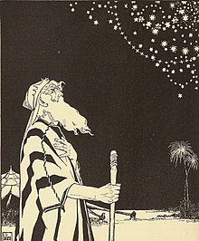
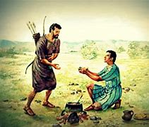

| Dios |
Señor le dijo a Abram: «Deja tu tierra, tus parientes y la casa de tu padre, y vete a la tierra que
te mostraré. »Haré de ti una nación grande, y te bendeciré; haré famoso tu nombre, y serás una
bendición.
Bendeciré a los que te bendigan y maldeciré a los que te maldigan;
¡por medio de ti serán bendecidas todas las familias de la tierra! |
 |
| Abraham |
Fue llamado por Dios para dejar su tierra y su parentela, a cambio de una promesa de tener
descendencia como las estrellas del cielo o las arenas del mar. Es considerado el padre de la fe, ya
que incluso iba a sacrificar a su hijo Isaac por cumplir lo que Dios le había pedido. |
 |
| Isaac |
Su nombre significa «hará reír» y se debe a la hilaridad que causó a su madre el anuncio de un
viajero al que había hospedado de que daría luz a un hijo, pues «dada su edad, no podía creer estar
embarazada». Según el relato bíblico, Sara contaba con noventa años y Abraham con cien años en ese
momento. |
|
| Esau |
Según la Biblia Hebrea, Esaú era el hijo mayor del patriarca Isaac y de Rebeca. Era, por tanto,
hermano de Jacob, antepasado legendario de los israelitas.
Era cazador, belludo, valiente y el favorito de su padre Isaac, pero vendio sus derechos de
primogenito a Jacob
|
 |
| Jacob |
Conocido como el engañador, pues engaño a su padre para conseguir la bendición que le corresponde al
hermano mayor y por esto tuvo que huir por mucho tiempo de su hermano. Dios estuvo a su favor y no
solo le dio esposas y prosperidad, sino que le cambio el nombre y fue el padre de los 12 patriarcas
de las tribus de Israel. |
|
| Jose |
Era el hijo preferido de su padre Jacob; Por eso sus hermanos le tenían envidia y lo vendieron como
esclavo. Pero Dios estuvo con él, y le dio sabiduría de administración e interpretación de sueños.
Así que logro ser el segundo en rango de poder en Egipto (solo después del faraón), administro las
cosechas del reino y salvo a muchas personas de una hambruna en su época |
|
| Judá |
Fue el cuarto hijo de Jacob, un importante líder de las doce tribus de Israel y uno de los
principales ancestros del pueblo judío perteneciente directo de la genealogía de David y Jesús |
|